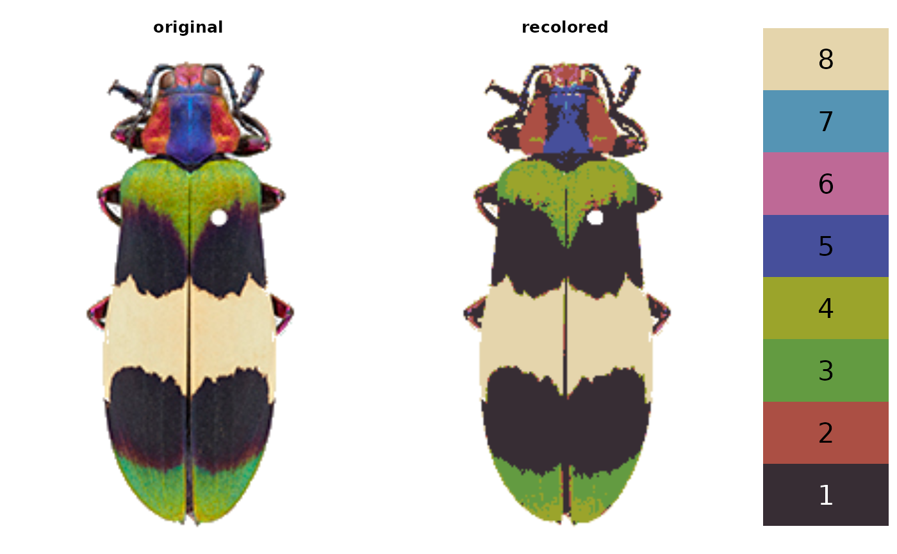
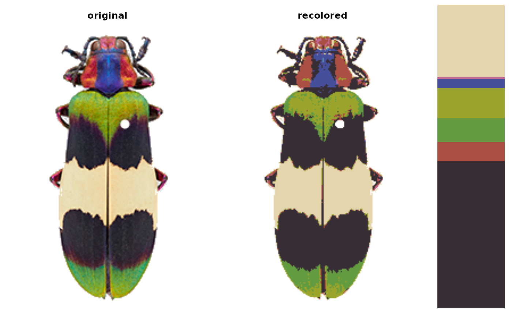

S3 plotting method for objects of class recolorize. Plots a side-by-side
comparison of an original image and its recolorized version, plus the color
palette used for recoloring.
Usage
# S3 method for class 'recolorize'
plot(x, ..., plot_original = TRUE, horiz = TRUE, cex_text = 2, sizes = FALSE)Arguments
- x
An object of class
recolorize, such as returned byrecolorize(),recluster(),imposeColors(), etc.- ...
further arguments passed to
plot.- plot_original
Logical. Plot the original image for comparison?
- horiz
Logical. Should plots be stacked vertically or horizontally?
- cex_text
Text size for printing color indices. Plotting parameters passed to
[recolorize]{plotColorPalette}.- sizes
Logical. If
TRUE, color palette is plotted proportional to the size of each color. IfFALSE, all colors take up an equal amount of space, and their indices are printed for reference.
Examples
corbetti <- system.file("extdata/corbetti.png",
package = "recolorize")
corbetti_recolor <- recolorize(corbetti, method = "hist",
bins = 2, plotting = FALSE)
#>
#> Using 2^3 = 8 total bins
# unscaled color palette
plot(corbetti_recolor)

# scaled color palette
plot(corbetti_recolor, sizes = TRUE)
